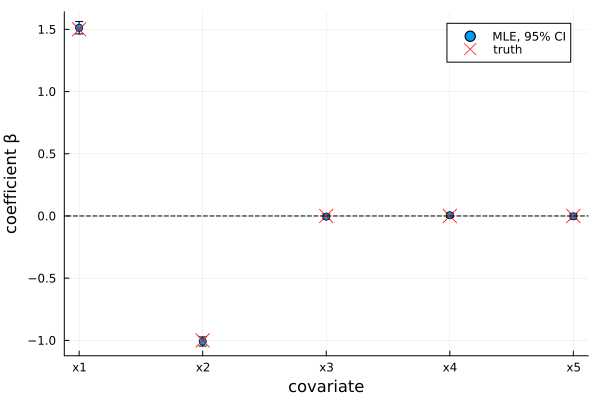
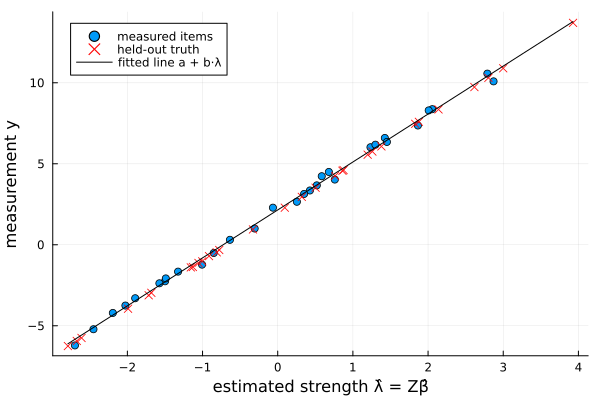
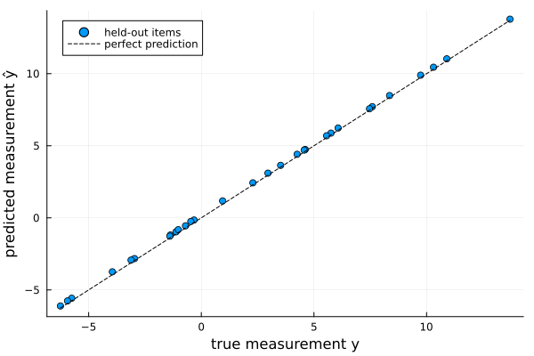
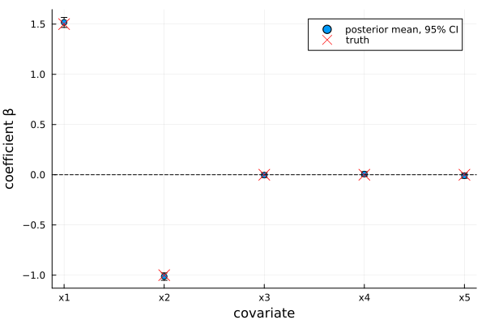
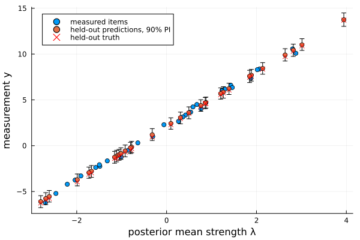
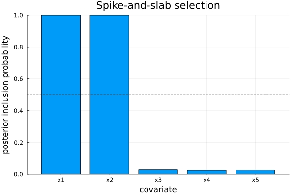

Anchored covariate Bradley–Terry models
The covariate model explains item strengths with covariates ($\lambda_i = z_i^\top\beta$); the anchored model calibrates the latent scale to real measurements ($y = a + b\lambda + \varepsilon$). Their combination — Anchored{Covariates{BradleyTerry}}, aliased BradleyTerryCovariatesAnchored — does both at once:
\[\lambda_i = z_i^\top\beta, \qquad \operatorname{logit} P(i \text{ beats } j) = (z_i - z_j)^\top\beta, \qquad y_k = a + b\,(z_k^\top\beta) + \varepsilon_k, \;\; \varepsilon_k \sim N(0,\sigma^2),\; k \in S.\]
Everything is fit jointly over $(\beta, a, b, \sigma^2)$: the comparisons and the anchors both inform the coefficients $\beta$, the anchors pin down the calibration $(a, b, \sigma^2)$. The payoff over the plain anchored model is that, because strengths are a function of covariates, we can predict a measurement for an item that was never compared and never measured — from its covariates alone, $y^\* = a + b\,z_{\text{new}}^\top\beta$.
The model is literally the two wrappers composed: Anchored(Covariates(BradleyTerry())), fit with an AnchoredData that wraps a CovariateData. Because $\beta$ is identified by the comparisons (constant covariate columns are rejected), $\lambda = Z\beta$ has a determined location and is used uncentred — its absolute scale is exactly what $(a, b)$ calibrate to.
The same four workflows as the covariate model are available — MLE, StepwiseMLE, and Bayesian with a NormalPrior, HorseshoePrior or SpikeSlabPrior on $\beta$.
Simulating data
We simulate 60 items with five covariates (only the first two matter), draw the comparisons, and measure half the items — holding out the other half to test measurement prediction. The true calibration is $a = 2$, $b = 3$, $\sigma = 0.3$:
using ComparativeJudgement
using Random
using Statistics: mean, quantile
rng = MersenneTwister(2025)
K = 60
β_true = [1.5, -1.0, 0.0, 0.0, 0.0]
p = length(β_true)
Z = randn(rng, K, p)
λ_true = Z * β_true
labels = ["item" * lpad(i, 2, '0') for i in 1:K]
logistic(x) = 1 / (1 + exp(-x))
wins = zeros(Int, K, K)
for i in 1:K, j in (i + 1):K
for _ in 1:8
rand(rng) < logistic(λ_true[i] - λ_true[j]) ? (wins[i, j] += 1) : (wins[j, i] += 1)
end
end
cd = CovariateData(PairwiseData(wins, labels), Z, [:x1, :x2, :x3, :x4, :x5])
a_true, b_true, σ_true = 2.0, 3.0, 0.3
measured = 1:2:K # measure every other item
held_out = 2:2:K # predict these
y_true = a_true .+ b_true .* λ_true # noiseless measurement scale
y_obs = y_true[measured] .+ σ_true .* randn(rng, length(measured))
acd = AnchoredData(cd, labels[measured], y_obs)AnchoredData wraps the CovariateData together with the measured items' labels and values (a Dict works too). Only the measured covariates relate linearly to the measurements; the held-out items will be predicted purely from their covariates and comparison record.
Maximum likelihood
fitted = fit(BradleyTerryCovariatesAnchored(), MLE(), acd)
coefficients(fitted)(x1 = 1.5130844604455462, x2 = -1.0086901193304445, x3 = -0.005086336313270015, x4 = 0.0058889799605890214, x5 = -0.00253274577045054)coefficients recovers $\beta \approx (1.5, -1.0, 0, 0, 0)$, and calibration the joint estimates of $(a, b, \sigma^2)$:
calibration(fitted)(a = 2.1508527727121365, b = 2.9605864673694415, σ² = 0.05619084836575085)coefficient_intervals gives Wald confidence intervals from the joint Fisher information; the two signal covariates separate cleanly from the three null ones:
using Plots
β̂ = collect(values(coefficients(fitted)))
lohi = collect(values(coefficient_intervals(fitted; level=0.95)))
lo, hi = first.(lohi), last.(lohi)
scatter(1:p, β̂; yerror=(β̂ .- lo, hi .- β̂), label="MLE, 95% CI",
xticks=(1:p, string.(cd.names)), xlabel="covariate", ylabel="coefficient β",
legend=:topright)
scatter!(1:p, β_true; marker=:x, markersize=7, color=:red, label="truth")
hline!([0]; color=:black, linestyle=:dash, label="")
Predicting held-out measurements
predict maps items onto the measurement scale via $a + b\,\lambda$. With no item argument it returns the predicted measurement for every item; we compare the never-measured held-out items against their true values:
preds = predict(fitted)
rmse = sqrt(mean((preds[held_out] .- y_true[held_out]).^2))
round(rmse, digits=3)0.155The calibration line maps latent strengths to the measurement scale; the measured items pin it down and the held-out items ride along it:
cal = calibration(fitted)
λ̂ = strengths(fitted)
scatter(λ̂[measured], y_obs; xlabel="estimated strength λ̂ = Zβ̂",
ylabel="measurement y", label="measured items", legend=:topleft)
scatter!(λ̂[held_out], y_true[held_out]; marker=:x, color=:red,
label="held-out truth")
plot!(x -> cal.a + cal.b * x, extrema(λ̂)...; color=:black, label="fitted line a + b·λ")
Predicted-versus-true for the held-out half tracks the diagonal — none of these items was measured:
scatter(y_true[held_out], preds[held_out]; label="held-out items",
xlabel="true measurement y", ylabel="predicted measurement ŷ", legend=:topleft)
plot!(identity, extrema(y_true[held_out])...; linestyle=:dash, color=:black,
label="perfect prediction")
Predicting a brand-new item
Because strengths are a function of covariates, we can predict the measurement of an item that is not in the dataset at all — passing its covariate vector to predict. Its latent strength is $z_{\text{new}}^\top\hat\beta$ and its measurement $a + b\,z_{\text{new}}^\top\hat\beta$:
z_new = [1.0, -0.5, 0.0, 0.0, 0.0]
(point = predict(fitted, z_new),
interval = predict(fitted, z_new; prob=0.9)) # normal interval from σ̂²(point = 8.123627308823703, interval = (7.733721189815541, 8.513533427831865))Bayesian inference
A Bayesian fit returns joint posterior draws of $\beta$, $(a, b)$, $\sigma^2$ and the strengths. With the default NormalPrior on $\beta$:
method = Bayesian(n_samples=1500, n_burnin=500)
bayes = fit(BradleyTerryCovariatesAnchored(), method, acd; rng=MersenneTwister(1))
coefficients(bayes)(x1 = 1.517465983794591, x2 = -1.012671548525035, x3 = -0.0038313218636012313, x4 = 0.006873359426217295, x5 = -0.009002890489695091)coefficient_intervals now gives posterior credible intervals, and calibration the posterior-mean calibration:
(coefficients = coefficient_intervals(bayes; level=0.95), calibration = calibration(bayes))(coefficients = (x1 = (1.4670268321752133, 1.5663108477590446), x2 = (-1.0512590359791134, -0.9773865622784004), x3 = (-0.027045329003645265, 0.019474850036665124), x4 = (-0.015404580713196593, 0.029671407288374137), x5 = (-0.03527730891332252, 0.016887506459083348)), calibration = (a = 2.138250372361514, b = 2.9436523474809073, σ² = 0.13206270629992203))bm = collect(values(coefficients(bayes)))
lohi = collect(values(coefficient_intervals(bayes; level=0.95)))
lo, hi = first.(lohi), last.(lohi)
scatter(1:p, bm; yerror=(bm .- lo, hi .- bm), label="posterior mean, 95% CI",
xticks=(1:p, string.(cd.names)), xlabel="covariate", ylabel="coefficient β")
scatter!(1:p, β_true; marker=:x, markersize=7, color=:red, label="truth")
hline!([0]; color=:black, linestyle=:dash, label="")
For the held-out items, predict gives full posterior-predictive intervals that propagate both the comparison and the calibration uncertainty:
λ_post = posterior_mean(bayes)
pred_ints = [predict(bayes, k; prob=0.9, rng=MersenneTwister(k)) for k in held_out]
plo, phi = first.(pred_ints), last.(pred_ints)
preds_b = predict(bayes)
scatter(λ_post[measured], y_obs; xlabel="posterior mean strength λ",
ylabel="measurement y", label="measured items", legend=:topleft)
scatter!(λ_post[held_out], preds_b[held_out];
yerror=(preds_b[held_out] .- plo, phi .- preds_b[held_out]),
label="held-out predictions, 90% PI")
scatter!(λ_post[held_out], y_true[held_out]; marker=:x, color=:red, label="held-out truth")
The latent-strength accessors (posterior_mean, credible_interval) and a posterior-predictive draw for an unseen covariate row work too:
(credible_interval(bayes, 1; prob=0.95),
quantile(predict(bayes, z_new; rng=MersenneTwister(7)), [0.05, 0.95]))((-0.9250634612933119, -0.7918635072725105), [7.490963748205814, 8.662499369725994])Shrinkage and selection
The covariate selection tools carry over unchanged. The HorseshoePrior shrinks the null coefficients while leaving the signal almost untouched:
hs = fit(BradleyTerryCovariatesAnchored(), method, acd, HorseshoePrior();
rng=MersenneTwister(2))
coefficients(hs)(x1 = 1.5155267582120346, x2 = -1.011424166389486, x3 = -0.003108303916363519, x4 = 0.005482046702912491, x5 = -0.006372917068082915)The SpikeSlabPrior reports posterior inclusion probabilities — high for the two real covariates, near zero for the rest:
ss = fit(BradleyTerryCovariatesAnchored(), method, acd, SpikeSlabPrior();
rng=MersenneTwister(3))
pip = collect(values(inclusion_probabilities(ss)))
bar(string.(cd.names), pip; legend=false, ylims=(0, 1), xlabel="covariate",
ylabel="posterior inclusion probability", title="Spike-and-slab selection")
hline!([0.5]; color=:black, linestyle=:dash)
And StepwiseMLE selects covariates by joint AIC/BIC, exactly as for the covariate model — here BIC keeps only the two real covariates:
selected = fit(BradleyTerryCovariatesAnchored(),
StepwiseMLE(direction=:both, criterion=:BIC), acd)
(selected = selected.result.selected, coefficients = coefficients(selected))(selected = [1, 2], coefficients = (x1 = 1.5137050137640828, x2 = -1.0099497166000007))Priors can be controlled individually by passing a full AnchoredCovariatePrior (a $\beta$ prior plus the calibration and variance priors); passing a bare $\beta$ prior, as above, wraps it with weakly-informative defaults.
Group-averaged anchors
An anchor measurement may apply to a group of items rather than one — for example the mean exam mark of a batch of scripts. Pass label-groups instead of labels: the anchor is then the group-mean strength,
\[y_g = a + b\,\operatorname{mean}_{i\in G_g}(z_i^\top\beta) + \varepsilon_g, \qquad \varepsilon_g \sim N(0,\,\sigma^2/n_g),\quad n_g = |G_g|,\]
with larger groups treated as more precise. Internally this just averages the covariates within each group ($\bar z_g = \operatorname{mean}_{i\in G_g} z_i$), so MLE, Bayesian inference and selection all carry over unchanged. We split the 60 items into 15 batches of 4 and measure each batch's mean:
batches = [collect(g) for g in Iterators.partition(1:K, 4)] # 15 groups of 4
batch_labels = [labels[g] for g in batches]
batch_y = [a_true + b_true * sum(λ_true[g]) / length(g) for g in batches] .+
[σ_true / sqrt(length(g)) for g in batches] .* randn(rng, length(batches))
gdata = AnchoredData(cd, batch_labels, batch_y)
gfit = fit(BradleyTerryCovariatesAnchored(), MLE(), gdata)
(coefficients = coefficients(gfit), calibration = calibration(gfit))(coefficients = (x1 = 1.5181311470932228, x2 = -0.9971335694718663, x3 = -0.009040623387728364, x4 = 0.005247165732575473, x5 = -0.013875331539927005), calibration = (a = 2.0222422381433374, b = 3.0604881868191005, σ² = 0.0975535008770838))The coefficients and calibration are recovered from group averages alone, and predicting a brand-new item from its covariates works just as before:
predict(gfit, z_new)8.194322434888981